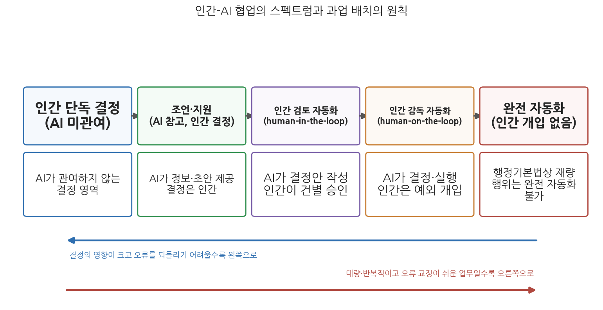
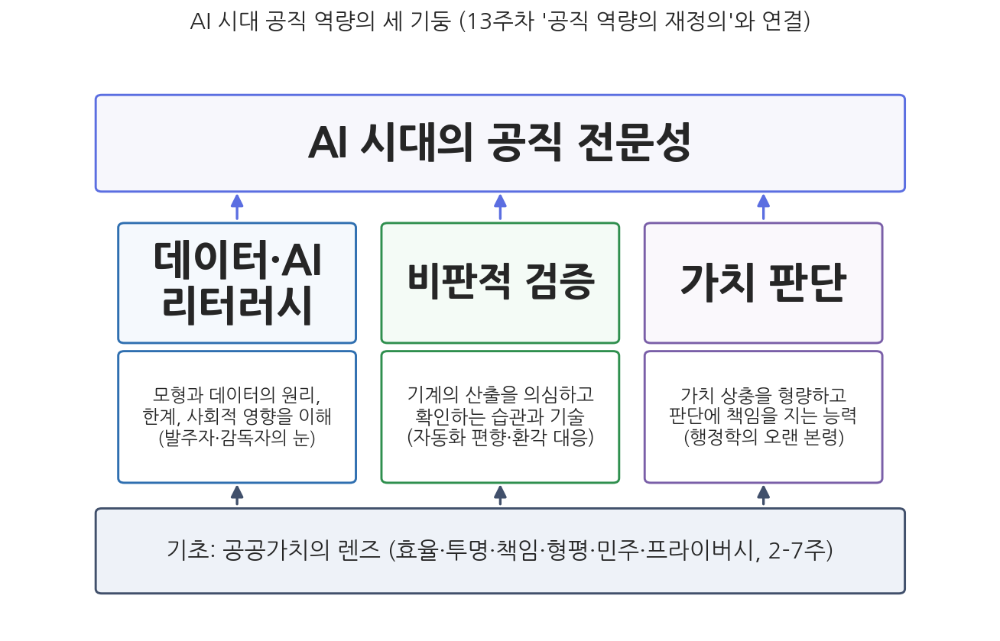

14주차 2차시. 종합 (2): 디지털 시대 행정의 미래
우리는 기술의 효과를 단기적으로는 과대평가하고, 장기적으로는 과소평가하는 경향이 있다. (로이 아마라, 미래학자. 이른바 "아마라의 법칙")
이 장에서 배우는 것
2025년 11월 24일, 행정안전부와 과학기술정보통신부는 중앙정부와 지방자치단체 공무원이 행정 내부망에서 민간 기업의 생성형 AI를 안전하게 쓸 수 있게 하는 "범정부 AI 공통기반" 서비스를 개시했다고 발표했다. 1주차에서 우리는 이 과목의 출발점을 "전자정부에서 지능정부로"라는 문장으로 요약했는데, 문서를 온라인으로 접수하던 정부(전자정부)와 공무원이 내부망에서 대형언어모델과 대화하며 보고서 초안을 다듬는 정부(지능정부) 사이의 거리가 바로 이 한 학기가 다룬 거리다. 그리고 이제 우리는 그 거리를 낙관도 비관도 아닌 눈으로 잴 수 있는 도구를 갖고 있다.
앞 차시(14주차 1차시)에서 우리는 여섯 가치와 네 제도를 하나의 지도로 합쳤다. 이 마지막 장은 그 지도를 들고 앞을 본다. 다만 미래를 다루는 장에서 흔한 유혹, 곧 장밋빛 전망이나 종말론적 경고를 늘어놓는 유혹은 처음부터 사절한다. 이 장이 하려는 일은 네 가지다. 낙관론과 비관론의 논거를 각각 공정하게 검토해 균형 잡힌 평가 틀을 세우고, 그 틀 위에서 인간-AI 협업 행정이라는 미래상을 그리며, 그 미래에서 공직자에게 요구될 역량을 따지고, 마지막으로 이 교재가 답하지 못한 채 열어 두는 질문들을 정직하게 남기는 것이다. 구체적으로 다음을 배운다.
- 기술 낙관론과 비관론 각각의 논거, 그리고 둘을 넘어서는 조건부 평가의 틀
- 자동화(automation)가 아니라 보강(augmentation)이라는 인간-AI 협업 행정의 상과 협업 스펙트럼
- 데이터·AI 리터러시, 비판적 검증, 가치 판단이라는 공직 역량의 세 기둥
- 이 교재가 열어 두는 다섯 개의 논쟁적 질문
이 장은 하나의 질문을 따라 전개된다. "AI 시대의 행정은 어디로 가야 하며, 그 길을 걷는 공직자에게는 무엇이 필요한가?"
2.1 낙관론과 비관론의 논거를 각각 검토하고 조건부 평가의 틀을 세운다 → 2.2 자동화가 아니라 보강이라는 인간-AI 협업 행정의 상을 그린다 (13주차와 연결) → 2.3 공직자에게 필요한 세 가지 역량을 따진다 → 2.4 교재가 열어 두는 질문들을 남기며 한 학기를 닫는다.
2.1 기술 낙관론과 비관론 사이
낙관론의 논거: 더 유능하고 더 반응적인 정부
낙관론부터 공정하게 듣자. 이 교재가 확인한 낙관의 근거는 막연한 기대가 아니라 구체적 성과들이다. 2주차에서 본 것처럼 AI는 방대한 데이터에서 인간 분석가가 놓치는 패턴을 찾아내고(사기 탐지), 반복 업무를 자동화해 처리 시간을 줄이며(로봇 프로세스 자동화), 24시간 민원 응대를 가능하게 한다(챗봇). 9주차에서 본 것처럼 정책과정의 각 단계에서도 AI는 문제의 조기 감지(나우캐스팅), 대안의 사전 시뮬레이션, 실시간 정책 평가라는 새로운 능력을 정부에 부여한다. 유엔 보고서(2024)가 AI 혁신이 여러 나라에서 행정을 더 효과적이고 반응적으로 만들고 있다고 평가한 것도 같은 맥락이다. 13주차의 생성형 AI는 여기에 또 한 층을 얹었다. 과거의 AI가 예측과 분류라는 특정 과업의 도구였다면, 생성형 AI는 문서 작성, 요약, 번역, 상담처럼 사무직 업무의 한복판으로 들어왔고, 공무원 개개인이 코딩 없이 쓸 수 있는 범용 도구가 되었다.
미국 재무부는 2024 회계연도에 AI를 포함한 데이터 분석 강화로 사기 방지·회수 금액이 40억 달러를 넘어 전년의 약 6배에 달했다고 발표했다(2024년 10월). 그중 AI 기반 탐지가 환급 사기 약 10억 달러의 회수에 기여했는데, 이는 전년 대비 약 3배 규모다. 재무부는 연간 약 14억 건, 7조 달러 규모의 지급을 처리하므로 미세한 이상 패턴의 자동 감지가 결정적이다. 주목할 점은 운용 방식이다. 국세청은 생성형 AI가 아니라 검증된 기계학습 모형을 썼고, AI가 의심 거래를 표시하면 최종 판정은 인간 담당자가 내리는 구조를 유지했다. 같은 시기 재무부는 범죄자들 역시 AI(딥페이크 피싱 등)로 무장하고 있다며 AI를 금융 시스템의 "새로운 취약성"으로도 분류했다.
이 사례가 보여 주는 것은 낙관론의 가장 설득력 있는 형태다. 성과는 실재하되, 그 성과가 "검증된 기술 + 인간의 최종 판정 + 위험에 대한 경계"라는 조건 위에서 나왔다는 점이다. 낙관의 근거가 되는 사례들을 뜯어 보면 이런 조건들이 거의 항상 붙어 있다.
비관론의 논거: 더 불투명하고 더 차별적인 정부
비관론의 근거도 이 교재 곳곳에서 확인되었다. 3주차의 블랙박스와 영업비밀, 4주차의 책임 공백과 자동화 편향, 5주차의 편향 학습과 증폭, 6주차의 허위정보와 참여 격차, 7주차의 감시와 동의 원칙의 붕괴가 그것이고, 앞 차시에서 통합 분석한 네덜란드 아동수당 스캔들은 이 모든 것이 한꺼번에 실현된 최악의 시나리오였다. 비관론은 여기에 구조적 논거를 보탠다. 첫째, 권력 집중의 문제다. 11주차에서 본 것처럼 데이터와 알고리즘을 통제하는 소수(정부 내 특정 부처든, 소수의 빅테크 기업이든)에게 권력이 쏠리는 경향이 있으며, 정부는 핵심 기술을 민간에 의존할수록 감독 능력을 잃는다. 둘째, 비가역성의 문제다. 일단 배치된 시스템은 관성을 갖고, 잘못이 드러나도 이미 발생한 피해(네덜란드에서 가정에서 분리된 아이들)는 되돌릴 수 없다. 셋째, 침식의 문제다. 하나하나는 사소해 보이는 자동화와 데이터 수집이 쌓이면서 재량, 숙의, 프라이버시 같은 민주적 완충 장치가 서서히 침식된다는 우려다.
둘을 넘어서: 조건부 평가의 틀
낙관론과 비관론은 각각 절반의 진실을 쥐고 있지만, 둘 다 같은 오류를 공유한다. 기술이 그 자체의 논리로 정해진 결과를 낳는다고 보는 기술결정론이다. 낙관론은 좋은 결과가, 비관론은 나쁜 결과가 기술에 내장되어 있다고 가정한다. 그러나 한 학기의 증거는 다른 것을 말한다. 같은 위험 예측 기술이 미국 국세청에서는 성과로, 네덜란드 국세청에서는 참사로 귀결되었다. 차이를 만든 것은 기술이 아니라 조건이었다. 이 장 서두의 크랜츠버그의 법칙(14주차 1차시 도입 인용구)을 다시 떠올리자. 기술은 좋지도 나쁘지도 않지만 중립적이지도 않다. 결과는 열려 있으되, 아무렇게나 열려 있는 것이 아니라 우리가 설계하는 조건에 따라 달라지는 방식으로 열려 있다.
그래서 이 교재가 제안하는 평가 틀은 "AI는 행정에 좋은가"라는 질문을 버리고 세 개의 조건 질문으로 바꾸는 것이다. 첫째, 어떤 가치의 관점에서 보는가. 하나의 도입 사례도 효율의 렌즈와 형평의 렌즈는 다른 판정을 내릴 수 있다(표 14-1). 둘째, 어떤 과업과 맥락인가. 오류의 비용이 낮고 되돌릴 수 있는 과업(문서 요약)과 시민의 권리를 좌우하는 과업(급여 자격 판정)은 같은 기준으로 평가될 수 없다. 셋째, 어떤 제도적 조건이 갖춰져 있는가. 영향평가, 인간 감독, 공개와 감사, 이의제기 절차(14주차 1차시의 네 제도)가 작동하는 환경과 그렇지 않은 환경에서 같은 기술은 다른 결과를 낳는다. 이 세 질문에 대한 답이 채워질 때에만 "이 도입은 정당하다" 또는 "위험하다"는 판정이 가능하다. 아마라의 법칙이 경고하듯 단기의 화려한 시연에 과도하게 흥분할 일도, 단기의 실패에 과도하게 실망할 일도 아니다. 길게 작동할 조건을 만드는 것이 행정학의 몫이다.
2.2 자동화가 아니라 보강: 인간-AI 협업 행정의 상
두 개의 미래상
AI 시대 행정의 미래상은 크게 둘로 갈린다. 하나는 자동화(automation)의 상이다. 인간이 하던 결정을 기계가 대체하고, 인간은 시스템의 관리자로 물러난다. 2주차에서 본 보번스와 자우리디스(Bovens & Zouridis 2002)의 진단, 곧 거리의 관료가 화면 수준을 거쳐 시스템 수준 관료제로 대체된다는 진단은 이 방향의 연장선이다. 다른 하나는 보강(augmentation)의 상이다. 기계는 인간의 판단을 대체하는 것이 아니라 확장한다. 데이터 처리와 초안 작성은 기계가, 맥락 해석과 최종 판단과 책임은 인간이 맡는 분업이다(Daugherty & Wilson 2018).
이 교재의 논의 전체는 공공부문에서 보강의 상이 규범적으로 옳고 현실적으로도 우월하다는 쪽을 가리킨다. 규범적으로는, 4주차에서 본 것처럼 책임성의 주체는 인간으로 남아야 하며(설명 요구에 답할 존재가 공무원이어야 한다는 요청), 형평의 마지막 안전판인 재량(2주차)도 인간에게 있기 때문이다. 현실적으로는, 완전 자동화가 시도된 지점마다 자동화 편향과 책임 공백이 재난을 낳았기 때문이다(4주차, 9주차, 그리고 네덜란드). 13주차에서 본 생성형 AI의 특성도 이 방향을 강화한다. 생성형 AI는 그럴듯하지만 사실이 아닌 내용을 만들어 내는 환각(hallucination) 위험을 안고 있어, 산출물을 검증 없이 쓸 수 없는 도구, 본질적으로 "초안 작성자"이지 "결재권자"일 수 없는 도구이기 때문이다.
우리 법제도 이미 이 방향의 기준선을 하나 갖고 있다. 행정기본법 제20조는 완전히 자동화된 시스템(AI를 적용한 시스템 포함)에 의한 처분을 법률이 정하는 경우에 허용하되, 재량이 있는 처분은 제외한다. 규칙 적용으로 답이 정해지는 기속 행위는 자동화의 후보가 될 수 있어도, 형량과 판단이 필요한 재량 행위에는 인간이 남아야 한다는 입법적 선언이다.
협업의 스펙트럼
다만 "보강이냐 자동화냐"는 양자택일이 아니라 정도의 문제다. 인간과 AI의 역할 배분은 스펙트럼 위에 있다.

그림 14-3을 읽는 법은 이렇다. 왼쪽 끝은 AI가 전혀 관여하지 않는 인간 단독 결정이고, 오른쪽 끝은 인간이 관여하지 않는 완전 자동화다. 그 사이에 AI가 정보와 초안을 제공하고 인간이 결정하는 단계(조언), AI가 결정안을 만들고 인간이 건별로 검토·승인하는 단계(인간 검토 자동화, human-in-the-loop), AI가 결정을 실행하되 인간이 전체 성능을 감독하며 예외에 개입하는 단계(인간 감독 자동화, human-on-the-loop)가 있다. 아래쪽 화살표는 배치의 원칙을 나타낸다. 결정이 시민의 권리·의무에 미치는 영향이 크고 오류를 되돌리기 어려울수록 왼쪽(인간 쪽)에, 영향이 작고 오류 교정이 쉬운 대량·반복 업무일수록 오른쪽(자동화 쪽)에 배치한다는 원칙이다. 이 그림에서 알 수 있는 것은 두 가지다. 첫째, 올바른 질문은 "AI를 쓸 것인가"가 아니라 "이 과업을 스펙트럼의 어디에 놓을 것인가"다. 둘째, 같은 기관 안에서도 과업마다 위치가 달라야 한다. 회의록 요약과 급여 자격 판정을 같은 자리에 놓는 순간 설계는 실패한다.
이 스펙트럼 위에서 경계해야 할 두 가지 실패 양상이 있다. 하나는 명목상의 인간 개입이다. 제도상 인간 검토 단계가 있어도, 담당자가 하루 수백 건을 처리하며 기계의 판단을 기계적으로 승인한다면 그 인간은 책임의 방패막이일 뿐이다. 4주차에서 본 자동화 편향, 그리고 커밍스(Cummings 2006)가 말한 도덕적 완충, 곧 기계를 사이에 두면 결정의 도덕적 무게가 덜 느껴지는 심리가 이 형해화를 부추긴다. 인간 개입이 실질이 되려면 검토에 필요한 시간, 정보(판단 근거의 설명), 그리고 기계와 다른 결정을 내려도 불이익이 없는 조직 문화가 함께 주어져야 한다. 다른 하나는 디지털 재량의 방치다. 2주차에서 본 것처럼 자동화 시대의 재량은 사라지는 것이 아니라 알고리즘의 산출을 해석하고 예외를 다루는 지점으로 이동한다. 이 "디지털 재량"을 누가 어떻게 행사하는지 설계하지 않으면, 재량은 공식 조직도 바깥의 보이지 않는 곳(모형을 튜닝하는 개발자, 데이터를 정제하는 외주업체)으로 흘러간다. 13주차에서 본 AI 에이전트, 곧 여러 단계의 작업을 스스로 계획하고 실행하는 시스템의 등장은 이 설계 문제를 한층 급하게 만든다. 에이전트에게 위임하는 작업의 범위와 중단 조건을 정하는 일 자체가 새로운 행정 행위가 되기 때문이다.
행정안전부와 과학기술정보통신부는 2025년 11월 24일부터 "범정부 AI 공통기반" 서비스를 개시했다. 중앙부처와 지방자치단체 공무원이 보안이 확보된 행정 내부망 안에서 민간 기업(삼성SDS, 네이버클라우드 등)의 대형언어모델 기반 대화형 AI를 공동 활용할 수 있게 한 것으로, 정부가 보유한 법령·지침·민원 상담 자료 등을 연계해 문서 작성, 요약, 검색 같은 일상 행정업무를 지원한다. 외부 인터넷망의 상용 챗봇에 행정 정보를 입력할 때 생기는 보안·유출 위험을 피하면서 생성형 AI를 쓰게 하려는 설계이며, 정부는 향후 국산 독자 AI 모델도 공통기반에 연동해 나갈 계획을 밝혔다. 이에 앞서 정부는 「공공부문 초거대 AI 도입·활용 가이드라인」(2024년 4월)을 마련해 공공기관의 생성형 AI 도입 절차와 유의사항을 안내한 바 있다.
이 사례가 보여 주는 것은 한국 정부의 생성형 AI 도입이 스펙트럼의 왼쪽, 곧 보강 지대에서 시작되고 있다는 점이다. 대상 업무는 문서 작성과 요약처럼 오류 비용이 낮고 인간의 검토가 자연스럽게 뒤따르는 과업이고, 보안이라는 조건(내부망)이 먼저 설계되었다. 13주차에서 본 공무원 AI 활용 가이드라인들의 공통 원칙, 곧 산출물 검증 책임은 사용자에게 있고 민감 정보 입력은 금지된다는 원칙도 같은 방향이다. 관건은 이 신중함이 활용 범위가 넓어진 뒤에도, 특히 대국민 결정에 가까워질수록 유지되는가다.
2.3 공직자에게 필요한 역량
전문성의 재구성
13주차 2차시의 마지막 주제는 "공직 역량의 재정의"였다. 이 절은 그 논의를 한 학기 전체와 연결해 마무리한다. AI 시대에 공직자의 전문성이 불필요해진다는 전망은 이 교재의 증거들과 맞지 않다. 오히려 반대다. 기계가 정보 처리를 맡을수록, 인간에게는 기계가 못 하는 일, 곧 기계를 의심하고 맥락을 읽고 가치를 형량하는 일이 남는다. 그 일을 감당할 역량을 세 기둥으로 정리할 수 있다.

그림 14-4를 읽는 법은 이렇다. 세 개의 기둥이 "AI 시대의 공직 전문성"이라는 지붕을 떠받치고, 기둥 아래의 기초는 한 학기 동안 배운 공공가치의 렌즈다. 이 그림에서 알 수 있는 것은, 세 역량이 병렬적 목록이 아니라 서로를 전제하는 구조물이라는 점이다. 이해하지 못하면 의심할 수 없고, 의심하지 않으면 형량할 기회조차 없다.
첫째 기둥, 데이터·AI 리터러시. 모형이 어떻게 학습되고 어디서 틀리는지, 데이터가 어떻게 수집되고 무엇을 대표하지 못하는지를 이해하는 능력이다. 이것은 개발자가 되라는 요구가 아니다. 1주차에서 본 것처럼 AI 리터러시는 미래 공직의 기본 소양으로, 발주자·사용자·감독자로서 기술 공급자와 대등하게 대화할 수 있는 수준의 이해를 뜻한다. 6주차에서 배운 디지털 리터러시 개념(Ng 2012)이 기술적 역량만이 아니라 인지적·사회정서적 역량을 포함했던 것을 기억하자. 공직자의 AI 리터러시도 마찬가지로 도구 사용법을 넘어 기술의 한계와 사회적 영향에 대한 이해를 포함한다.
둘째 기둥, 비판적 검증. 기계의 산출을 의심하고 확인하는 습관과 기술이다. 4주차의 자동화 편향은 지식이 아니라 태도의 문제임을 보여 주었다. 위험 점수가 화면에 뜨는 순간 그것을 기각할 수 있는 사람만이 실질적 인간 개입의 주체가 된다. 생성형 AI 시대에 이 역량은 더 절실해졌다. 13주차에서 본 환각 문제 때문에, 출처 확인과 사실 검증은 AI 산출물을 다루는 모든 공무원의 일상 업무가 되었다. 검증 없는 사용은 편리가 아니라 직무 태만이다.
셋째 기둥, 가치 판단. 세 기둥 가운데 가장 오래된 것이자 가장 기계로 대체하기 어려운 것이다. 14주차 1차시에서 본 것처럼 AI 행정의 핵심 문제들은 결국 형량의 문제, 곧 효율과 형평 사이에서, 투명과 프라이버시 사이에서 무엇을 얼마나 양보시킬지 판단하는 문제로 수렴한다. 공정성 기준의 선택이 통계학이 아니라 가치 판단의 문제였음(COMPAS 논쟁)을 떠올리자. 이 판단은 알고리즘에 코딩된 가정을 읽어 내는 리터러시 위에서, 그리고 행정이 누구를 위해 존재하는가에 대한 규범적 감각 위에서만 가능하다. 행정학이라는 학문, 그리고 이 과목이 기술 과목이 아니라 가치 과목이었던 이유가 여기에 있다.
하나는 축소의 오해다. 리터러시를 프롬프트 작성 요령이나 특정 도구의 조작법으로 좁혀 이해하면, 도구가 바뀔 때마다 무용지물이 되는 기능 교육만 남는다. 핵심은 도구가 바뀌어도 유지되는 이해, 곧 "이 시스템은 무엇을 근거로 이런 출력을 내며, 어떤 상황에서 신뢰할 수 없는가"를 묻는 능력이다. 다른 하나는 만능의 오해다. 공무원 개인의 리터러시가 높아지면 조직의 문제가 해결된다는 기대다. 그러나 검토할 시간이 주어지지 않는 업무량, 기계와 다른 판단을 내렸을 때 감사를 두려워해야 하는 문화 속에서는 아무리 유능한 개인도 자동화 편향을 이기기 어렵다. 역량은 개인의 덕목인 동시에 조직 설계의 산물이다.
역량을 기르는 제도
역량이 조직 설계의 산물이라면, 교육훈련과 인사제도의 과제가 뒤따른다. 2주차의 논의가 예고했듯 공직 교육은 사회복지나 법 집행 같은 실질 전문성에 데이터 리터러시와 자동화 시스템 감독 역량을 더하는 방향으로 재편될 필요가 있다. 정부의 가이드라인(「공공부문 초거대 AI 도입·활용 가이드라인」 등)과 부처별 생성형 AI 활용 지침이 정한 원칙들이 문서로 끝나지 않으려면, 채용과 평가, 감사 기준이 그 원칙과 정렬되어야 한다. 예컨대 "AI 산출의 검증"이 직무기술서와 성과 평가에 들어가고, 기계의 판단을 합리적 근거로 기각한 결정이 감사에서 불이익을 받지 않는다는 보장이 서야, 둘째 기둥(비판적 검증)은 구호에서 행동으로 바뀐다.
2.4 남는 질문들
교과서는 답을 정리하는 책이지만, 좋은 과목은 질문을 남기고 끝나야 한다. 다음 다섯 질문은 이 교재가 사실과 개념을 제공할 수는 있어도 결론을 대신 내려 줄 수 없는, 여러분 세대가 공직자로서 또 시민으로서 답해 가야 할 질문들이다.
질문 하나. 기계가 결정해도 되는 행정 결정의 경계는 어디인가. 행정기본법 제20조는 재량 행위를 자동화에서 제외했지만, 기속과 재량의 경계는 생각만큼 선명하지 않고, 형식상 인간이 결정하되 실질은 기계가 결정하는 회색지대는 계속 넓어진다. 오류율이 인간보다 낮은 시스템이 등장한다면 "인간이 결정해야 한다"는 원칙은 여전히 옳은가, 아니면 더 많이 틀리는 인간을 고집하는 것이 오히려 시민에 대한 배신인가.
질문 둘. 공정성의 기준은 누가 정하는가. 공정성의 여러 정의가 수학적으로 양립 불가능하다면(5주차), 어느 정의를 채택할지는 정치적 결정이 된다. 그 결정을 개발자에게 맡길 수 없다는 데까지는 합의가 쉽다. 그러나 그다음은? 입법자인가, 규제기관인가, 법원인가, 시민 숙의(6주차)인가. 기술의 세부에 대한 이해와 민주적 정당성을 겸비한 결정 주체를 우리는 아직 갖고 있지 못하다.
질문 셋. 규제는 기술의 속도를 따라잡을 수 있는가. 14주차 1차시에서 본 EU AI Act의 시행 연기는 세계에서 가장 야심적인 규제조차 준비 부족과 경쟁력 압력 앞에서 일정을 물렸음을 보여 준다. 한국의 AI기본법은 2026년 1월 22일 시행되었지만 핵심 의무가 노력 규정에 그치고 계도 위주로 출발했다(10주차, 12주차). 이 속도 문제에 대한 한 가지 응답이 12주차에서 본 적응적 규제, 곧 규제를 한 번에 완성하는 대신 시행 데이터를 학습해 갱신하고 규제 대상 시스템에 모니터링을 내장하는(AI 내장형 규제) 방식이다. 다만 그것이 속도를 따라잡는 해법인지, 아니면 유연성의 이름으로 규제를 무르게 만드는 통로인지는 여전히 열린 물음이다. 규제가 늦고 약한 것이 문제인가, 아니면 이르고 강한 규제가 혁신을 죽이는 것이 더 큰 문제인가. "브뤼셀 효과"와 "규제 후퇴" 중 어느 쪽이 2030년의 현실이 될 것인가.
질문 넷. AI는 관료제를 완성하는가, 해체하는가. 2주차에서 본 역설을 기억하자. 알고리즘은 규칙의 비인격적 적용이라는 베버 관료제의 이상을 극한까지 밀어붙인다. 그 점에서 AI는 관료제의 완성이다. 그러나 동시에 AI는 계층제적 결재선 바깥에서 작동하고, 책임의 사슬을 흐리며, 전문 관료의 판단을 데이터 과학자와 외주 시스템의 판단으로 대체한다. 그 점에서 AI는 관료제의 해체다. 머튼이 경고한 목표 대치(2주차)가 코드의 형태로 되살아날 때, 우리는 그것을 알아챌 수 있는 조직을 갖고 있는가.
질문 다섯. 민주주의는 AI를 통제할 수 있는가. 이 질문은 가장 크고, 이 교재의 모든 장과 닿아 있다. 알고리즘이 여론을 매개하고(6주차), 국가와 기업이 전례 없는 감시 능력을 갖추며(7주차), 거버넌스의 실권이 데이터를 쥔 소수에게 쏠리는(11주차) 조건에서, "권력은 국민의 동의에서 나온다"는 원리는 어떻게 작동해야 하는가. 네덜란드의 의회와 법원과 언론은 결국 작동했지만 십 년 가까이 걸렸다. 다음에는 더 빨리 작동하게 만들 수 있는가.
이 질문들 앞에서 이 교재가 마지막으로 주장하고 싶은 것은 하나다. 질문의 어휘가 이미 우리 손에 있다는 것이다. 효율, 투명, 책임, 형평, 민주, 프라이버시라는 여섯 가치, 그리고 정책과정, 영향평가, 거버넌스, 규제라는 네 제도의 언어는 AI 이후에 발명된 것이 아니라 행정학이 오래 벼려 온 것들이다. 1주차에서 우리는 "AI는 공공가치에 어떠한 영향을 미칠까"라는 질문으로 출발했다. 한 학기가 지난 지금 그 질문은 이렇게 다듬어졌다. 어떤 가치의 관점에서, 어떤 과업에 대해, 어떤 제도적 조건 아래에서, 누구의 판단과 책임으로 쓸 것인가. 이 질문을 물을 줄 아는 사람이 많아지는 것, 그것이 디지털 시대의 행정이 참사가 아니라 성취의 목록을 쌓아 가기 위한 최소 조건이다.
요약
이 장은 교재 전체를 미래를 향해 닫았다. 첫째, 기술 낙관론과 비관론은 각각 실재하는 증거(효율과 반응성의 성과 대 불투명·차별·권력 집중의 위험)를 갖지만, 둘 다 기술이 결과를 결정한다는 오류를 공유한다. 같은 기술이 조건에 따라 성과도 참사도 낳았으므로, 평가는 "어떤 가치, 어떤 과업, 어떤 제도적 조건"이라는 세 조건 질문 위에서 이루어져야 한다. 둘째, 공공부문의 미래상으로는 자동화가 아니라 보강, 곧 기계가 처리와 초안을 맡고 인간이 판단과 책임을 맡는 협업이 규범적으로도 현실적으로도 우월하며, 과업의 위험도에 따라 협업 스펙트럼 위의 위치를 정하는 것이 설계의 핵심이다. 행정기본법 제20조의 재량 행위 제외는 그 기준선의 하나다. 명목상의 인간 개입과 방치된 디지털 재량이 이 미래상의 두 실패 양상이다. 셋째, 공직자에게는 데이터·AI 리터러시, 비판적 검증, 가치 판단이라는 세 역량이 요구되며, 역량은 개인의 덕목인 동시에 교육훈련·평가·감사가 정렬된 조직 설계의 산물이다. 넷째, 자동화의 경계, 공정성 기준의 결정 주체, 규제의 속도, 관료제의 운명, 민주적 통제의 가능성이라는 다섯 질문은 열려 있으며, 이 교재가 제공한 여섯 가치와 네 제도의 언어가 그 질문에 답해 가는 도구다.
토론·복습 문제
14-5. (기말 대비 종합 서술형) "같은 기술이 조건에 따라 다른 결과를 낳는다"는 이 장의 명제를, 미국 국세청의 AI 사기 탐지(성과 사례)와 네덜란드 아동수당 스캔들(실패 사례)을 비교하여 논증하시오. 답안에는 (1) 두 사례의 공통점(기술·목적), (2) 결과를 가른 제도적 조건의 차이(인간 개입, 감독, 데이터 사용 등), (3) 이 비교가 기술 낙관론과 비관론 각각에 대해 갖는 함의가 포함되어야 한다.
14-6. (기말 대비 종합 서술형) 여러분이 한 지방자치단체의 AI 도입 책임자로서 (가) 민원 문서 요약 지원, (나) 복지 급여 부정수급 위험 선별, (다) 재난 취약 지역 예측이라는 세 과업에 생성형 AI 또는 기계학습 시스템의 도입을 검토한다고 하자. 그림 14-3의 협업 스펙트럼 위에 세 과업을 각각 배치하고, 배치의 근거를 (1) 오류의 비용과 가역성, (2) 관련되는 공공가치(표 14-1 활용), (3) 요구되는 제도적 안전장치(영향평가, 인간 검토, 공개 등)의 세 기준으로 서술하시오.
14-7. (찬반 토론) "충분한 검증을 거쳐 인간 심사자보다 오류율이 낮다고 입증된 AI 시스템이라면, 복지 급여 자격 판정을 완전 자동화하는 것이 오히려 시민에게 이익이다"라는 주장에 대해 찬반 입장을 정해 토론해 보시오. 찬성 측은 인간 심사의 편향과 비일관성 문제를, 반대 측은 책임성·이의제기권과 행정기본법 제20조의 취지를 논거에 포함하시오.
14-8. 2.4절의 다섯 질문 가운데 하나를 골라, 10년 뒤의 자신(공직자, 기업인, 또는 시민으로서)이 그 질문과 마주치게 될 구체적 장면을 상상해 서술하고, 이 과목에서 배운 개념 중 그 장면에서 가장 쓸모 있을 것 세 가지를 이유와 함께 제시하시오.